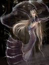

Récits Légendes de Kirin Tor Personnages Célébrités Guildes
Outils Calendrier Calendrier Illustré Mod d'interface
Informations Historiens FAQ Liens Crédits
Les légendes de Kirin Tor
Shaki
Mail : ==> Afficher les personnages de Shaki
Shaki
 Age : inconnu
Age : inconnu
Sexe : Femme
Race : Elfe
Faction : Alliance
Formation : Guerrier
Description : < doit trouver le temps de l'écrire en entier mais en résumer ca donne ca ^.^ >
Rien a envier rien a demander , elle se savait belle , elle en abusé , elle s'en servait.
Sa famille jamais vraiment a s'occuper d'elle elle passer des heures devant son reflet du lac a se regarder , quand la lune passait , son reflet étais que plus beau a ses yeux .
Il lui s'emblait que parfois la lune lui parlait et la suivait .
Shaki étais jalouse de celle ci chaque fois que son reflet passer sur le sien elle en était que plus énèrver de la beauter que l'effet donner .
Elle lui parlait , chaque soir elle murmurrait , chaque pas qu'elle fesait .
Shaki fini par aimer jalousement la lune , elle lui avait même planter un jardin a son honneur , remplis de toute sortes de plantes .
L'une d'elle donner de petit fruit pas plus grand qu'un écus , d'une couleur attirante , elle les trouver si beau , mais la lune lui disait de se méfier , de ne jamais en manger , ne jamais même les toucher .
Mais aprés tout Shaki a pas a écouter un astre immobile , elle en prix un grand panier que tout le monde chez elle ne mis pas longtemps a manger .
Le lendemain Shaki étais en pleur dans les bras de son Frère Teylan , sa famille était morte n apparament empoisoner , Shaki ne dit rien a son frère qui venait de rentré d'un cours voyage ...
Folie de la jeune elfe qui l'as poussais a tuer sa famille ..? Ou peu être légende ? Peu être même simplement mensonge de la jeune elfe...
Plus d'infos sur Shaki >>>